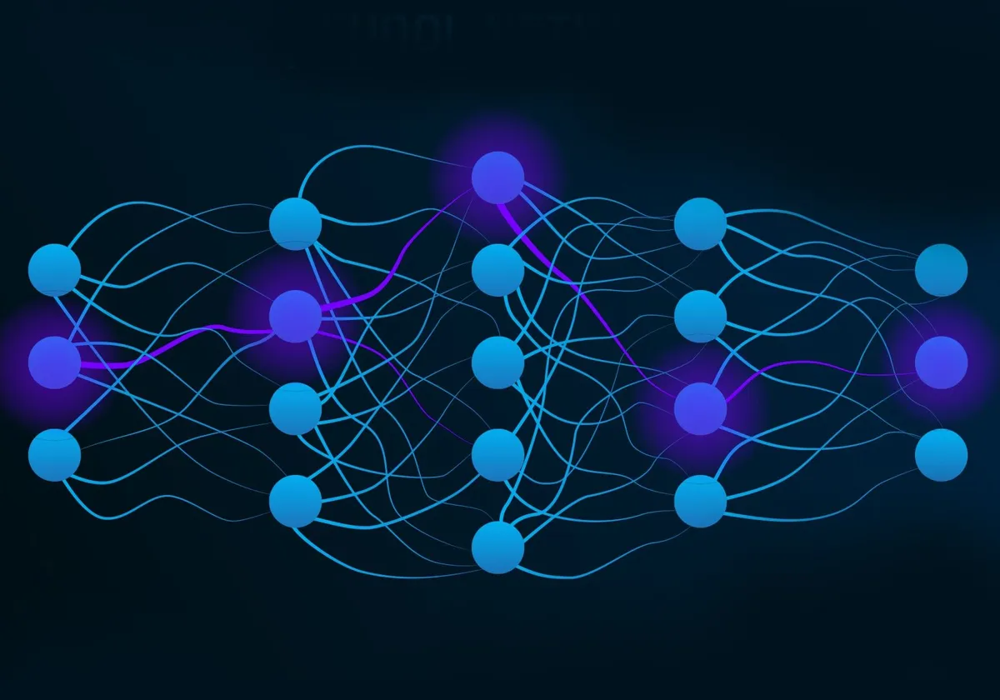

Full Stack
A full-stack web developer is a person who can develop both client and server software.
w3schoolsFull stack development refers to the end-to-end application software development, including the front end and back end. The front end consists of the user interface, and the back end takes care of the business logic and application workflows.
MongoDBData Science
Data science is the study of data to extract meaningful insights for business. It is a multidisciplinary approach that combines principles and practices from the fields of mathematics, statistics, artificial intelligence, and computer engineering to analyze large amounts of data.
AWSData science combines math and statistics, specialized programming, advanced analytics, artificial intelligence (AI) and machine learning with specific subject matter expertise to uncover actionable insights hidden in an organization’s data. These insights can be used to guide decision making and strategic planning.
IBM
Neural Networks
A neural network is a method in artificial intelligence that teaches computers to process data in a way that is inspired by the human brain. It is a type of machine learning process, called deep learning, that uses interconnected nodes or neurons in a layered structure that resembles the human brain.
AWSA neural network is a machine learning program, or model, that makes decisions in a manner similar to the human brain, by using processes that mimic the way biological neurons work together to identify phenomena, weigh options and arrive at conclusions.
IBM Computer Vision
Computer vision is a field of computer science that focuses on enabling computers to identify and understand objects and people in images and videos. Like other types of AI, computer vision seeks to perform and automate tasks that replicate human capabilities. In this case, computer vision seeks to replicate both the way humans see, and the way humans make sense of what they see.
microsoftComputer vision is a field of artificial intelligence (AI) that uses machine learning and neural networks to teach computers and systems to derive meaningful information from digital images, videos and other visual inputs—and to make recommendations or take actions when they see defects or issues.
ibmNatural languaje processing
Natural language processing (NLP) is a subfield of Artificial Intelligence (AI). This is a widely used technology for personal assistants that are used in various business fields/areas. This technology works on the speech provided by the user breaks it down for proper understanding and processes it accordingly. This is a very recent and effective approach due to which it has a really high demand in today’s market.
geeksforgeeksNatural language processing, or NLP, combines computational linguistics—rule-based modeling of human language—with statistical and machine learning models to enable computers and digital devices to recognize, understand and generate text and speech.
IBM